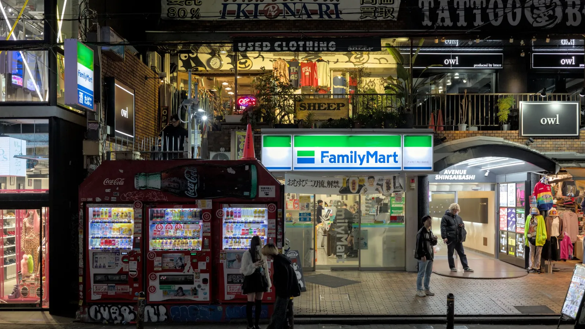

In breve
Il konbini (コンビニ, il minimarket) è il tuo migliore amico in Giappone. Ce n'è uno quasi a ogni angolo, la maggior parte è aperta 24 ore, e puoi mangiare bene spendendo poco, prelevare con una carta estera, ricaricare la Suica, stampare documenti e perfino spedire la valigia. Molti turisti finiscono per entrarci ogni giorno.
7‑Eleven, FamilyMart o Lawson?
| Catena | Famosa per | Utile per chi viaggia |
|---|---|---|
| 7‑Eleven | La rete più grande e cibo fresco molto buono | ATM Seven Bank: i più affidabili con le carte estere |
| FamilyMart | Pollo fritto Famichiki, dolci | ATM che accettano molte carte estere, macchinetta biglietti |
| Lawson | Bocconcini di pollo Karaage‑kun, dolci Uchi Café | ATM con menu in inglese; "Natural Lawson" per cibo più sano |
Vedrai anche catene più piccole come Ministop (con angolo per mangiare) e, in Hokkaido, Seicomart, amatissimo dai locali per i piatti caldi.
Cosa mangiare
- Onigiri (polpette di riso): tonno e maionese, salmone, prugna sottaceto. Apri l'involucro nell'ordine 1 → 2 → 3 (i numeri sulla plastica) così l'alga resta croccante.
- Bento: pasti completi con riso, carne o pesce, che il personale ti scalda.
- Tramezzino all'uovo (tamago sando): pane morbido e uovo cremoso, un vero cult.
- Pollo fritto vicino alla cassa: Famichiki da FamilyMart, Karaage‑kun da Lawson.
- Oden d'inverno: brodo con uovo, daikon e tortini di pesce, presi dalla pentola alla cassa.
- Dolci e bevande: dolci di stagione, tè verde freddo, caffè in lattina caldo dallo scaffale riscaldato d'inverno.
Pagare e le 3 domande alla cassa
Si accettano carte, tessere IC come Suica e PASMO e contanti. I contanti si appoggiano nel vassoio sul bancone, non in mano al cassiere. Spesso il personale ti farà tre domande veloci:
Contanti, biglietti, stampe e bagagli
- ATM: gli ATM Seven Bank dei 7‑Eleven accettano la maggior parte delle carte estere Visa, Mastercard, Amex, JCB e UnionPay, con menu in 12 lingue. La tua banca può aggiungere una commissione.
- Ricarica Suica/PASMO alla cassa o all'ATM.
- Tax-free: alcuni 7‑Eleven più grandi offrono acquisti senza tasse con il passaporto: cerca il cartello.
- Macchine multicopia: stampa carte d'imbarco, documenti e foto.
- Biglietti: concerti, musei e parchi divertimento si possono spesso pagare o ritirare alla macchinetta del negozio.
- Spedizione bagagli (takkyubin): manda la valigia al prossimo hotel o all'aeroporto e viaggia leggero sullo Shinkansen.
- Bagni: molti konbini ne hanno uno; chiedi gentilmente e compra qualcosa per ringraziare.
Le regole del konbini
- Non mangiare camminando: mangia nell'angolo interno se c'è, oppure appena fuori.
- Rifiuti: in Giappone i cestini pubblici sono rari. Usa quelli all'ingresso del konbini per ciò che hai comprato lì e dividi bene (lattine, bottiglie, combustibili).
- Fai la fila nella linea segnata a terra, non a una cassa a caso.
- Parla a bassa voce e niente lunghe telefonate dentro. Altri consigli in Galateo giapponese per turisti.
Prezzi e servizi sono indicativi e cambiano da negozio a negozio: guarda i cartelli in negozio.
Il konbini più vicino, a un tocco.
In 687 Japan, Nearby trova supermercati, negozi da 100 yen, punti per riempire la borraccia e depositi bagagli intorno a te, e l'aiuto menu in inglese mostra al personale la frase giusta in giapponese quando ti serve.
Fonti
- Seven Bank – ATM per carte estere
- Ente nazionale del turismo giapponese (JNTO) – pagamenti senza contanti
- JNTO – acquisti tax-free
Verificate su questi siti ufficiali a novembre 2026. Prezzi e regole possono cambiare: controlla sempre prima di partire.